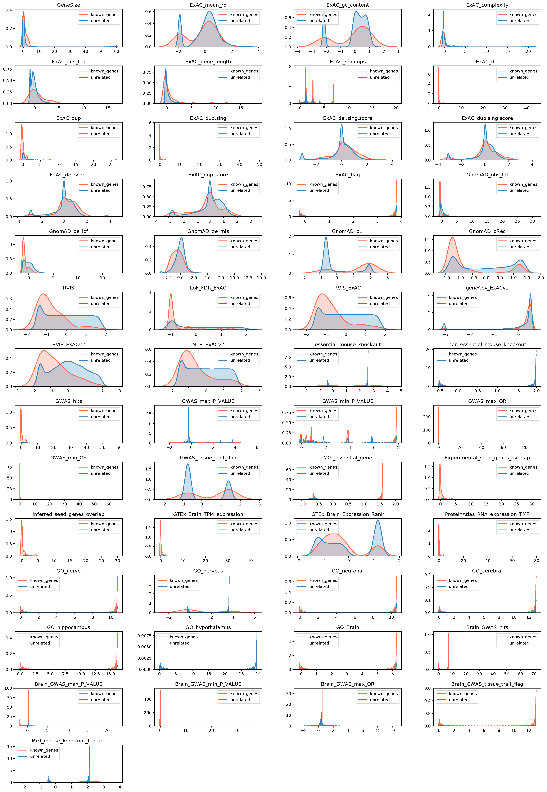
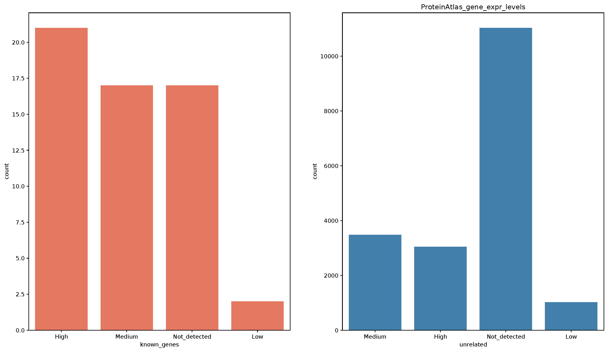
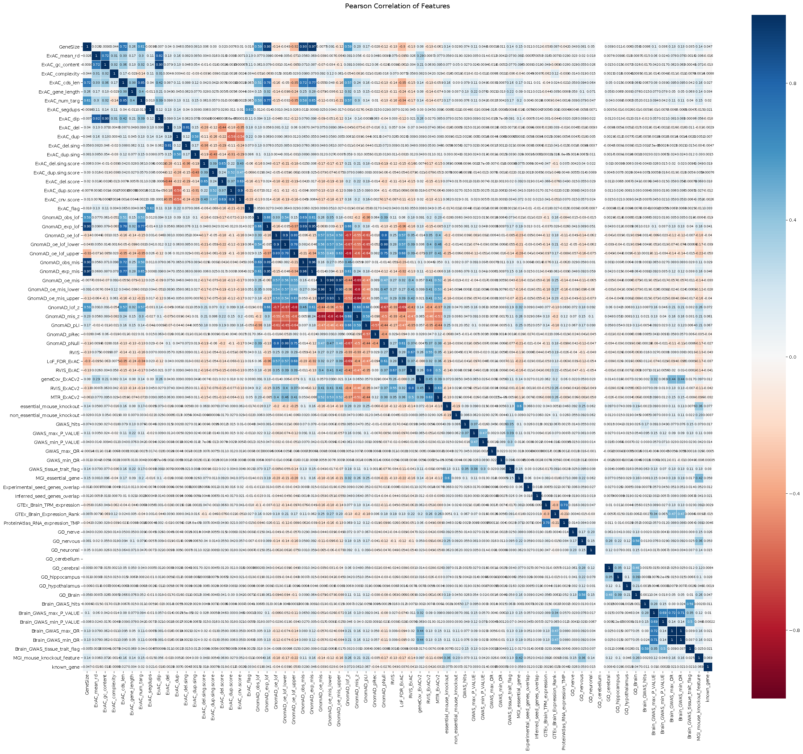
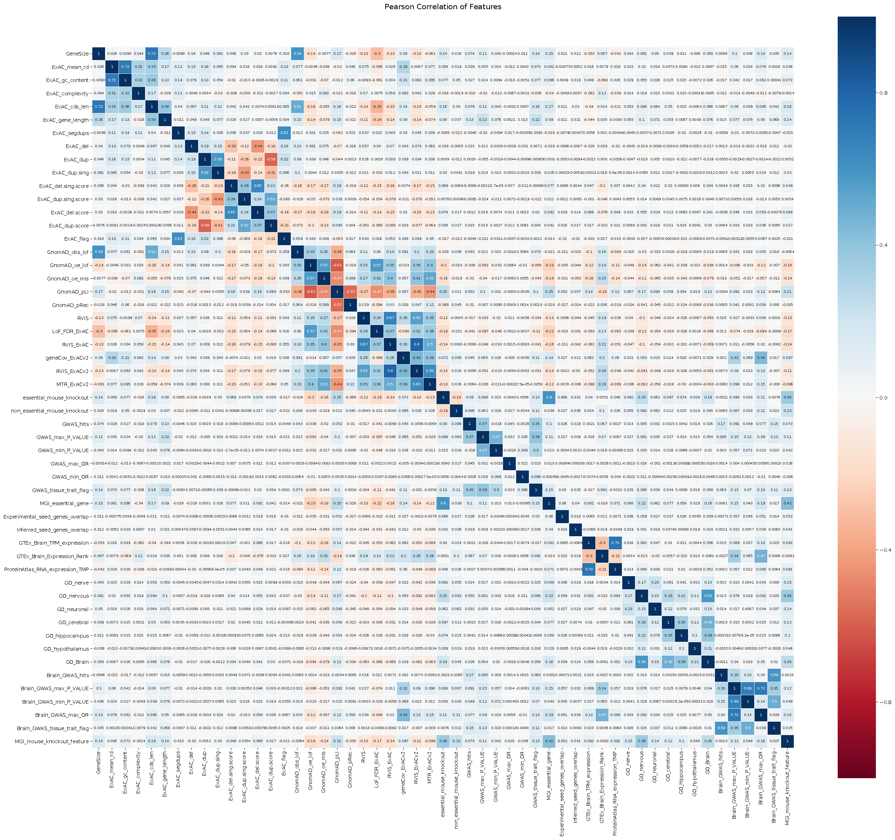
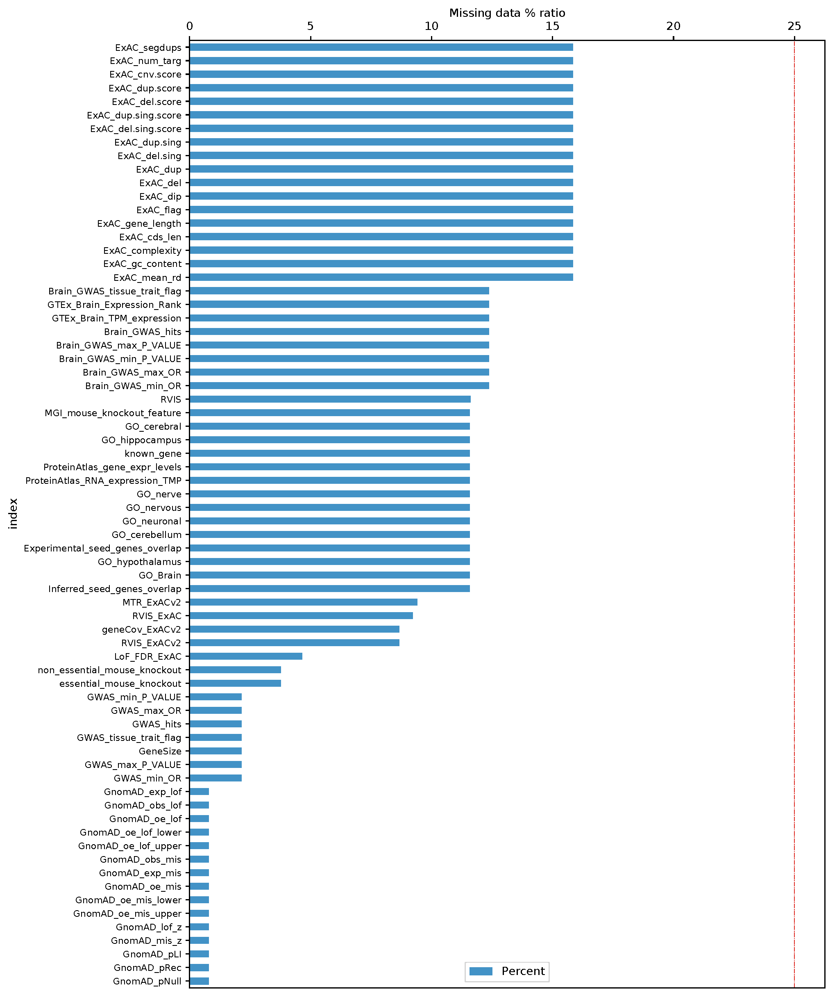

mantis-ml Gene Prioritisation Atlas
Autism
EDA Plots
Overview
Gene Rankings
Interactive Visualisation
PCA
t-SNE
UMAP
EDA Plots
Feature Importance
This section contains several plots from the
Exploratory Data Analysis
and feature pre-processing step. All plots are available for download as pdf files.
Plots include:
Histograms of numerical features
(distribution across known/seed and unrelated/unknown genes)
Histograms of categorical features
(distribution across known/seed and unrelated/unknown genes)
Heatmap of feature correlations
prior to filtering of highly-correlated features
Heatmap of feature correlations
post-filtering of highly-correlated features
Missing data ratios
(post-filtering of highly-correlated features)
Numerical features histograms
Download as pdf

Categorical features histograms
Download as pdf

Feauture correlations (prior to filtering of highly-correlated features)
Download as pdf

Feauture correlations (post-filtering of highly-correlated features)
Download as pdf

Missing data ratios (post-filtering of highly-correlated features)
Download as pdf
